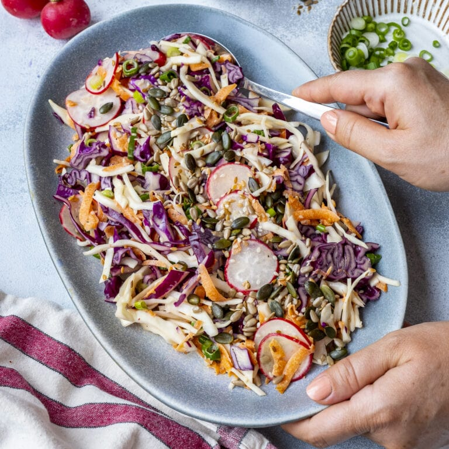

Rainbow Slaw

Original Recipe Source - Easy Peasy Foodie
Ingredients
- 2 tbsp Good Quality Mayonnaise
- 2 tbsp Apple Cider Vinegar
- Salt and Pepper
- 150g Carrots, Coarse Grated
- 1/2 tsp Cumin Seeds
- 250g White Cabbage, Finely Sliced
- 250g Red Cabbage, Finely Sliced
- 2 Spring Onions, Thinly Sliced
- 4 Small Radishes, Thinly Sliced
- 2 tbsp Mixed Seeds (e.g. Tesco Wholefoods 4 Seed Mix)
Method
- Place the mayonnaise, vinegar, salt and pepper in a large bowl and stir to combine.
- Add the grated carrot and cumin and stir well.
- Add the cabbage, spring onions and radishes, and stir again.
- Sprinkle over the mixed seeds as a garnish and serve.